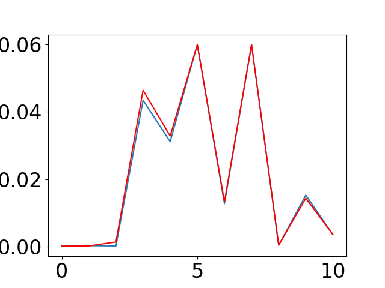
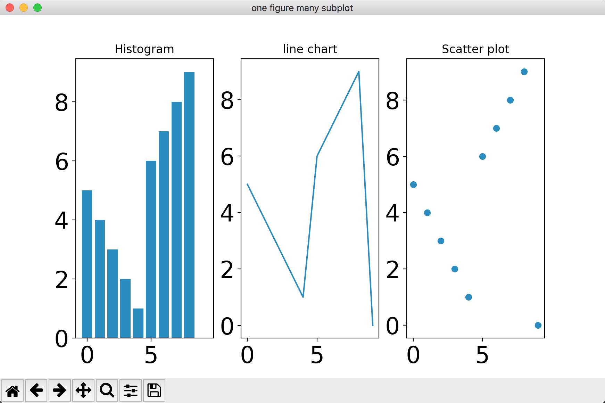
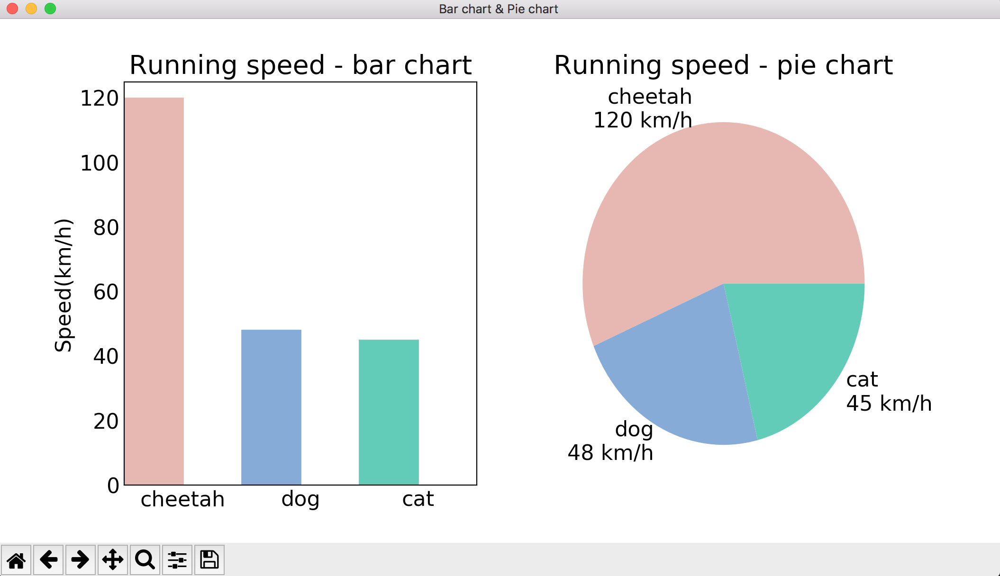

Matplotlib是Python中最常用的可视化工具之一，可以非常方便地创建海量类型地2D图表和一些基本的3D图表。
安装方式
# ubuntu上安装
sudo apt install python-matplotlib
# mac上安装
pip install matplotlib
快速入门
快速入门小例子1之画单个图
我们只要有x轴的数和y轴的数,那么就可以在坐标轴上画出图来了.
```
import numpy as np
import matplotlib as mpl
import matplotlib.pyplot as plt
通过rcParams设置全局横纵轴字体大小
mpl.rcParams['xtick.labelsize']=24
mpl.rcParams['ytick.labelsize']=24
x轴的点
x1 = np.arange(11)
y轴的点
y1 = [
1.0847275042134147E-4,
2.0106877828356476E-4,
1.1836360644802181E-4,
0.043453404423487926,
0.03113001646083574,
0.06,
0.012709253496067191,
0.06,
3.284899860591644E-4,
0.015235253124714847,
0.0034946847451197242,
]
创建一个图,名字为ctr
plt.figure("ctr")
在图上绘制
plt.plot(x1,y1)
将当前figure的图像保存到文件result.png
plt.savefig('result.pn
g')
一定要加上这句才能让画好的图显示在屏幕上
plt.show()
如图所示:

看上面就没有几行代码,但是就画出了一个图.所以用Matplotlib可以非常方便的绘制我们想要的图形.这里这是用最简单的例子说明一下.
## 快速入门小例子2之把两组坐标画在一个图上进行比较
这里我们有两组数据,希望能够方便的比较这两组数据的差异,那么我们就可以把趋势都画在一个图上
import numpy as np
import matplotlib as mpl
import matplotlib.pyplot as plt
通过rcParams设置全局横纵轴字体大小
mpl.rcParams['xtick.labelsize']=24
mpl.rcParams['ytick.labelsize']=24
x轴的点
x1 = np.arange(11)
y轴的点
y1 = [
1.0847275042134147E-4,
2.0106877828356476E-4,
1.1836360644802181E-4,
0.043453404423487926,
0.03113001646083574,
0.06,
0.012709253496067191,
0.06,
3.284899860591644E-4,
0.015235253124714847,
0.0034946847451197242,
]
创建一个图,名字为ctr
plt.figure("ctr")
在图上绘制
plt.plot(x1,y1)
x2 = np.arange(11)
y2 = [
3.529088519807792E-5,
1.1895968858318187E-4,
0.0013049292594645469,
0.046417845349992326,
0.03282177644291713,
0.06,
0.013313023920004725,
0.06,
3.554547063283854E-4,
0.014309633417956262,
0.0034946847451197242,
]
plt.figure("ctrEstimate")
plt.plot(x2,y2,'k')
两个图画一起
plt.figure('ctr & ctrEstimate')
plt.plot(x1, y1)
scatter可以方便出散点图
plt.scatter(x1,y11,c='red',marker='v')
plt.scatter(x2,y22,marker='')
'r'表示用红色线
plt.plot(x2, y2, 'r')
plt.show()
```
如图所示:

入门小例子3之多布局
在一张图上构建多个布局画多张图
```
import matplotlib as mpl
import matplotlib.pyplot as plt
通过rcParams设置全局横纵轴字体大小
mpl.rcParams['xtick.labelsize']=24
mpl.rcParams['ytick.labelsize']=24
x=range(10)
y=[5,4,3,2,1,6,7,8,9,0]
fig=plt.figure("one figure many subplot")
ax=fig.add_subplot(131)
ax.set_title('Histogram')
ax.bar(x,y)
ax=fig.add_subplot(132)
ax.set_title('line chart')
ax.plot(x,y)
ax=fig.add_subplot(133)
ax.set_title(u'Scatter plot')
ax.scatter(x,y)
plt.show()
```
如图所示

matplotlib画图api解释
单独的讲解api很无聊.直接写代码画图,代码里都有详细的说明
画2维的柱图和饼图
import numpy as np
import matplotlib as mpl
import matplotlib.pyplot as plt
mpl.rcParams['axes.titlesize'] = 20
mpl.rcParams['xtick.labelsize'] = 16
mpl.rcParams['ytick.labelsize'] = 16
mpl.rcParams['axes.labelsize'] = 16
mpl.rcParams['xtick.major.size'] = 0
mpl.rcParams['ytick.major.size'] = 0
# 包含了狗,猫和猎豹的最高奔跑速度,还有对应的可视化颜色
speed_map = {
'dog': (48, '#7199cf'),
'cat': (45, '#4fc4aa'),
'cheetah': (120, '#e1a7a2')
}
# 整体图的标图
fig=plt.figure('Bar chart & Pie chart')
# 在整张图上加入一个子图,121的意思是在一个1行2列的子图中的第一张
ax=fig.add_subplot(121)
ax.set_title("Running speed - bar chart")
# 生成x轴每个元素的位置 0 1 2
xticks=np.arange(3)
# 定义柱状图每个柱的宽度
bar_width=0.5
# 动物名称
animals=speed_map.keys()
# 奔跑速度
speeds=[x[0] for x in speed_map.values()]
# 对应颜色
colors=[x[1] for x in speed_map.values()]
# 画柱状图,横轴是动物标签的位置,纵轴是速度,定义柱的宽度,同时设置柱的边缘为透明
bars=ax.bar(xticks,speeds,width=bar_width,edgecolor='none')
# 设置y轴的标图
ax.set_ylabel('Speed(km/h)')
# x轴每个标签的具体位置,设置为每个柱的中央
ax.set_xticks(xticks+bar_width/2)
# 设置每个标签的名字
ax.set_xticklabels(animals)
# 设置x轴的范围
ax.set_xlim([bar_width/2-0.5,3-bar_width/2])
# 设置y轴的范围
ax.set_ylim([0,125])
# 给每个bar分配指定的颜色
for bar,color in zip(bars,colors):
bar.set_color(color)
# 在122位置加入新的图
ax=fig.add_subplot(122)
ax.set_title('Running speed - pie chart')
labels=['{}\n{} km/h'.format(animal,speed) for animal,speed in zip(animals,speeds)]
# 画饼状图,并指定标签和对应颜色
ax.pie(speeds,labels=labels,colors=colors)
# ax.plot(speeds)
plt.show()
